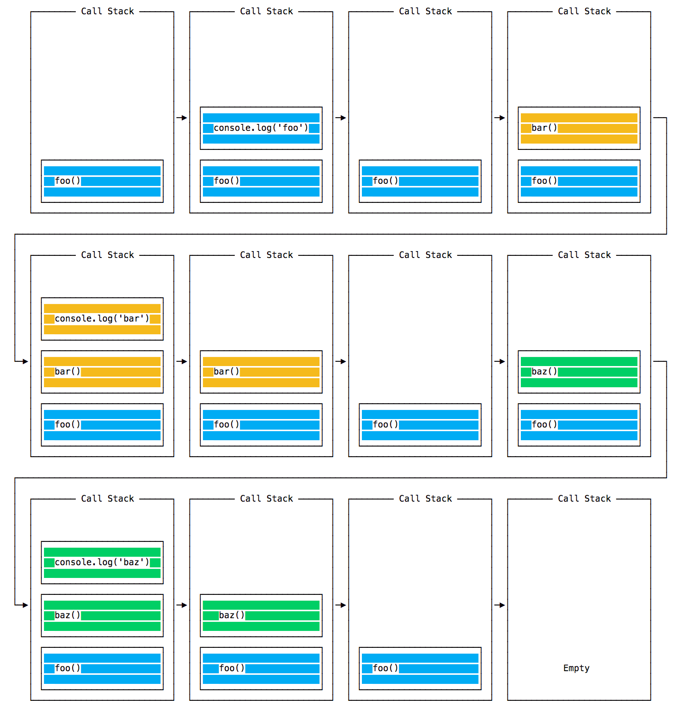
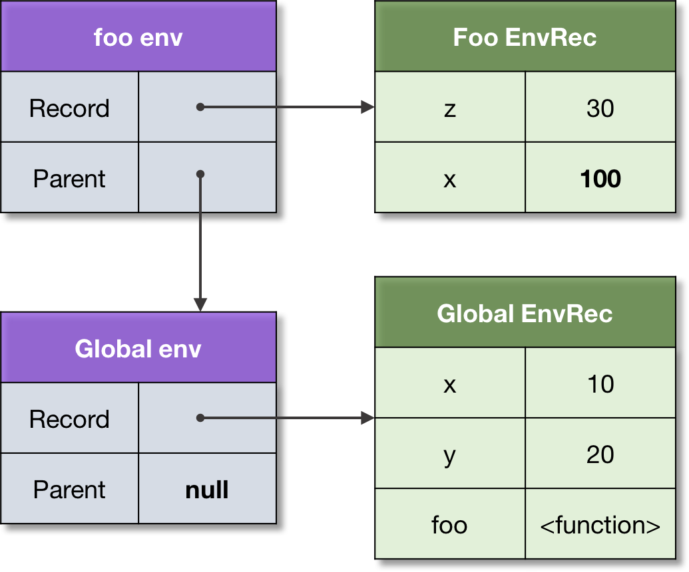

1. Контекст виконання і стек викликів
При виконанні функції, всередині її тіла можуть викликатися інші функції, а в них інші і т. д. JavaScript однопотоковий (в основному) мова, тобто в одну одиницю часу може виконуватися тільки одна операція.
Це означає, що вже викликані функції, які не закінчили своє виконання, повинні чекати виконання функцій викликаних всередині себе, для того щоб продовжити своє виконання. Відповідно необхідний механізм зберігання списку функцій які були викликані, але ще не закінчили своє виконання, і управління порядком виконання цих функцій, і саме за це відповідає стек контекстів виконання.
Стек - структура даних, яка працює за принципом
Останнім прийшов - першим вийшов (LIFO - Last In, First Out). Останнє, що ви
додали в стек, буде видалено з нього першим, тобто можна додати або видалити
елементи тільки з верхівки стека.
Уявіть стек як масив у якого є тільки методи Pop і
push, тобто ми можемо додати або видалити тільки елемент в кінці колекції.
Контекст виконання (execution context) - внутрішня конструкція мови для відстеження виконання функції, містить метаінформацію про її виклик.
- Глобальний контекст виконання (global execution context) - це контекст є за замовчуванням, сам файл скрипта - це функція яка запускається на виконання.
- Контекст виконання функції (functional execution context) - створюється кожен раз при виконанні функції.
Стек викликів (Execution Context stack, call stack) - внутрішня конструкція движка, яка містить всі контексти виконання.
Stack frame (кадр стека, запис стека) - структура яка додається на стек при виконанні функції. Зберігає деяку метаінформацію: ім'я функції, аргументи які були передані разом із дзвінком і номер рядка в якій стався виклик.
Іноді можна побачити помилку переповнення стека:
Uncaught RangeError: Maximum call stack size exceeded. Це може статися при
помилці в використанні рекурсії або зациклення викликів функцій, тобто якщо
йдуть нескінченні виклики функцій і нічого не повертається, і на стек додаються
і додаються записи. Є межа кількості записів стека, після досягнення якого буде
така помилка.
Глобальний контекст є в стеці за замовчуванням, створюється на старті виконання
скрипта, зазвичай називається main або global, і знаходиться в його нижній
частині, тобто поміщається туди першим. Якщо при виконанні коду відбувається
виклик функції, для неї створюється новий контекст і додається на верх стека
контекстів.
JS-двіжок виконує функцію, контекст виконання якої знаходиться на самому верху
стека. Після того як відбудеться вихід з функції (return), її контекст
виконання знімається зі стека. Далі виконуватися функція, контекст якої лежить
наступним.
const bar = function () {
console.log('bar');
};
const baz = function () {
console.log('baz');
};
const foo = function () {
console.log('foo');
bar();
baz();
};
foo();
При виконанні цього коду спочатку викликається foo (), потім всередині
foo () спочатку викликається bar (), а потім baz (). Виклики
console.log () так само враховуються, адже це функція. На ілюстрації нижче
покроково зображений стек викликів прикладу.

2. Лексичне оточення
Лексичне оточення (lexical environment) — внутрішня, закрита від прямого
доступу структура движка для зберігання в пам'яті таблиці (
Environment Record) ідентифікаторів змінних і їх значень, а так само значення
this, і механізм для вилучення цих значень при зверненні на ім'я, а так само
посилання на батьківське лексичне оточення (Parent).
Кожен раз, коли викликається функція і створюється її контекст виконання,
створюється лексичне оточення прив'язане до цього виклику. Якщо при виклику
функції всередині неї оголошується ще одна функція, то в її прихована
властивість (Inernal property або internal slot) [[Environment]] записується
посилання на це оточення.
В JavaScript функція це об'єкт, який створюється від
конструктора Function. Функція може містити властивості, як службові
внутрішні, так і визначаються розробником.
Таким чином кожна функція запам'ятовує лексичне оточення того контексту виконання в якому вона була оголошена. Це дозволяє підтримувати ланцюжок лексичних оточень і тому працює ланцюжок областей видимості.
Лексичне оточення можна уявити як словник - набір пар ключ: значення. Знаючи
ключ можна отримати значення. Точно так же, як і при роботі зі звичайним
паперовим словником, де ключ - це слово, а значення - визначення слова.
- Все змінні всередині функції, після оголошення, записуються в словник.
- У словнику зберігається посилання на зовнішнє лексичне оточення, то в якому функція була оголошена.
- Для глобального оточення, посилання на зовнішнє оточення немає, там
null. - Так само тут зберігається посилання на контекст виконання, про це пізніше.
В процесі виконання функції, значення змінних можуть змінюватися, що відразу ж відбивається в лексичному оточенні. В кінці виконання функції її лексичне оточення знищується, а зайнята ним пам'ять вивільняється.
Пошук значення ідентифікатора починається з локального оточення, і якщо в ньому не знайдений потрібний ідентифікатор, то пошук йде далі по ланцюжку оточень, аж до глобального.
У прикладі нижче, коментарями показано стан словника перед виконанням кожного рядка коду. Не забувайте, що створення і наповнення словника відбувається при виконанні функції, а не при її визначенні.
/*
Global env - створюється при виконанні файлу скрипта
Record: {}
Parent: null
*/
const x = 10;
/*
Global env
Record: {x: 10}
Parent: null
*/
const y = 20;
/*
Global env
Record: {x: 10, y: 20}
Parent: null
*/
/*
Записується в момент оголошення функції
[[Environment]] = Global env
*/
const foo = function (z) {
/*
Foo env - створюється в момент виклику функції
Record: {z: 30}
Parent: Global env
*/
const x = 100;
/*
Foo env - створюється в момент виклику функції
Record: {z: 30, x: 100}
Parent: Global env
*/
return x + y + z;
};
/*
Global env
Record: {x: 10, y: 20, foo: }
Parent: null
*/
foo(30); // 150
